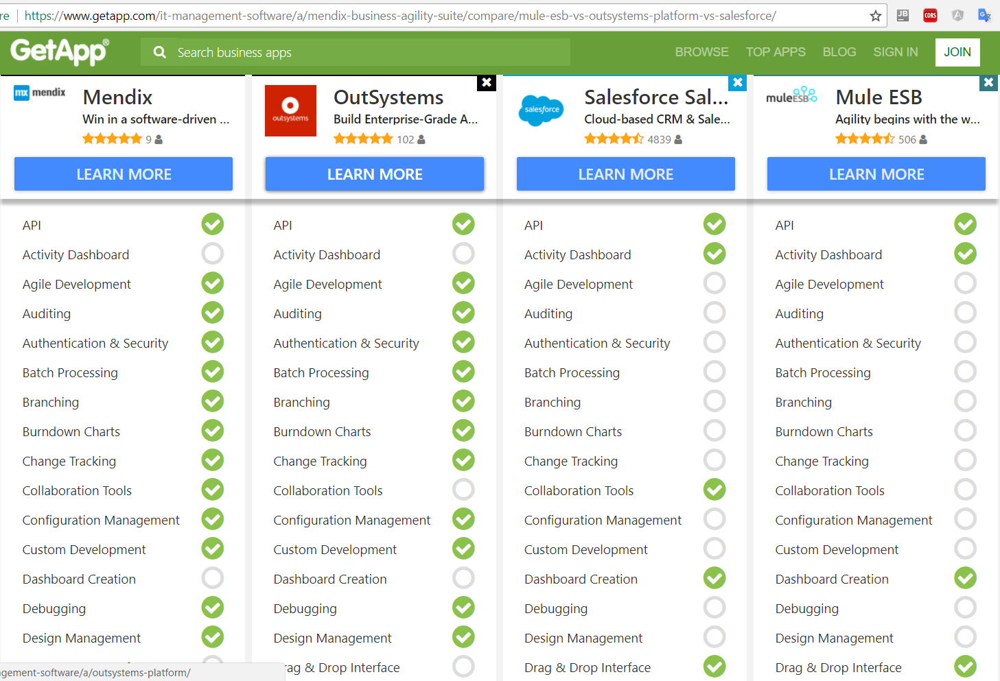

D'n'd development with RPA, hpaPaaS, mBaaS and ESB (iPaaS)
Posted on January 11, 2018 in Develop Updated: February 03, 2018
Development using Drag'n'drop (Low-code development platforms - LCDP) is also taking a share in development pipelines with test/prod environments and version control.
Some of the areas are
- Automated Business UI Process development - RPA. Automated frontend using existing UI as data transfer channel are created in this category.
- Application development - hpaPaaS. Apps, Webapps (frontends) and APIs (backends) are created in this category.
- Application APIs - mBaaS. This is backend exposing APIs to receive/produce data.
- Application integration - ESB / iPaaS. This is middleware/backend using and exposing APIs to transfer data (B2B).
1. RPA
Top RPA players are

2. hpaPaaS
In 2017 Microsoft Access RAD tools are called High Productivity Application Platform as a Service (hpaPaaS)

In the top quadrant there are only 3 players
- Salesforce
- Mendix - C# + Java
- OutSystems - C#
Download the Gartner Quadrant to learn more.
According to Gartner, by 2020, at least 50 percent of all new business applications will be created with high-productivity toolsets
And compare features and integrations

3. API
To create IOT or mobile backends there are API tools

4. ESB / iPaaS
To tie applications together there are integration tools also called ESBs

- Informatica
- Dell Boomi
- MuleSoft ESB - Java
- Neuron ESB - C#
Links
- Microservices, SOA, and APIs: Friends or enemies?

The End